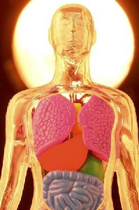

吃素为何也有病？
冯冯
吃素并非佛教独有，现在很多人吃素。
 吃素较吃荤为康健，因为素食较少浓缩脂肪与胆固醇及尸毒。是，为何仍有茹素而患上高血压、糖尿病、心脏病、痛风......等等疾病呢？
可能是因为吃的素食不当，举例：弟子供养法师，必恭必敬，务必是冬菇、油炸豆腐、金针叶、松茸、油炸豆腐皮，制作成素鸡素鸭素鱼，加入大量味精，用大量的油，以求味美。久而久之，吃到超重过胖，肥头大耳，以为是“佛相”，其实是太胖，太多脂肪，太高血脂与胆固醇、高血压、糖尿病。并非福相或佛相，古来都把“佛相”雕塑成超级大胖子，引起错觉，误以为肥胖就是佛相，真是害人不浅！
素油，例如油菜子油、葵花子油，粟米油、黄豆油，都不是高度浓缩脂肪，是较少引起高血脂肪。不过，若份量太多，又多吃油炸，那么素油也等于是荤油。若是“万年油”久炸的素油，（特别是花生油久炸），就会产生不利健康的化学物质。花生油与棕榈油椰子油，都是含有高度浓缩脂肪的，多吃的害处，跟荤油差不多。这样就知为何那么多大和尚也会走上高血压、心脏病与糖尿病。吃得太咸，吸收过多的钠，也是原因之一。一般吃素都太咸、太油了！
还有，那些吃素常吃的腌渍食物，例如：酱菜、茶瓜、酱瓜、腐乳、南乳、咸罗卜干、榨菜、辣豉酱、豆豉、豆板酱，都太咸，而且可能含有不利健康的物质，甚至有致癌的物质或病毒。
所以，虽然吃素一般较为保健，也看吃的什么素。倘若吃得太油、太腻、太咸、太不新鲜、太多发酵物、太多盐渍物、太多难消化物，那也是有害无益的素食，不是保健的素食。
保健的素食是：新鲜的深绿蔬菜与新鲜水果，平衡的营养，清淡少油的素食。
舍下的素食，没有油炸食品、没有盐渍或发酵食品、没有油腻、没有太甜或太咸、没有名贵的素品，只有豆腐素菜、水煮或蒸的青菜，和一些豆类，自制豆浆、清菜汤。这样清淡的素食，加上新鲜水果，和一些硬壳果，吃得很舒服，也比较年轻些。
原载《佛网》网站
2000 年 ── 2002 年